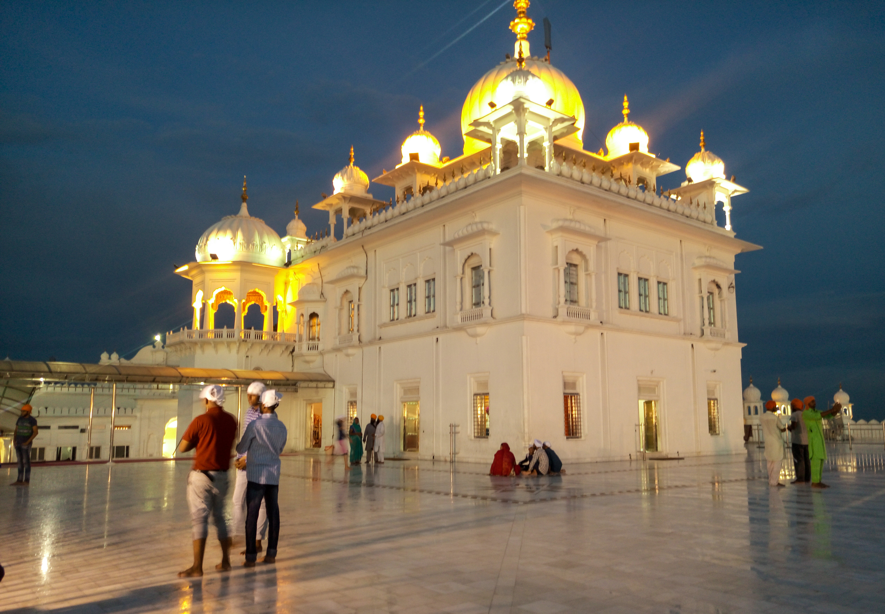
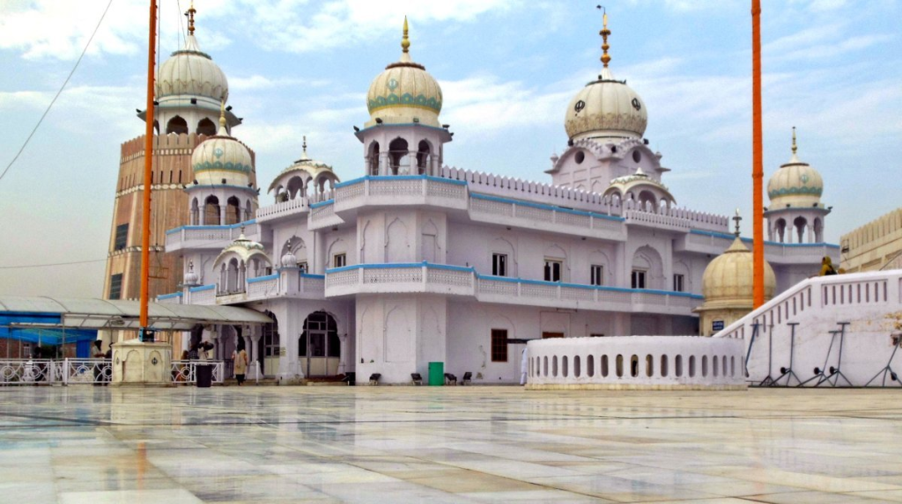
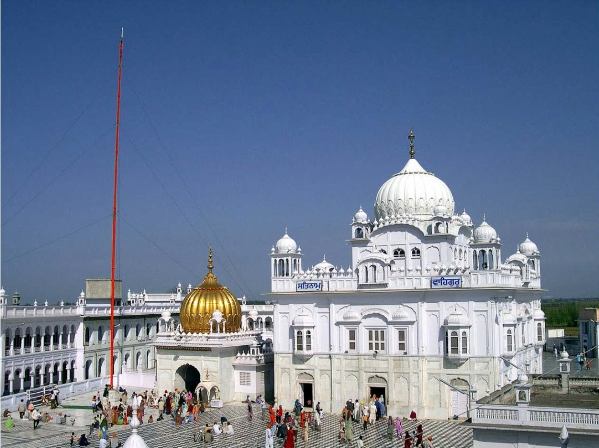

Temples and piligrimages in Punjab
Sri Harmandir Sahib (Golden Temple)
")
The Golden Temple, or Sri Harmandir Sahib, located in Amritsar, Punjab, is the holiest shrine in Sikhism, symbolizing equality, brotherhood, and devotion. Built in the 16th century and later adorned with 750 kg of pure gold, it is a major spiritual and cultural center, famous for its Amrit Sarovar (holy tank) and the daily, large-scale free community kitchen (Langar).
- Key Aspects of the Golden Temple:
- Significance: It is the central place of worship for Sikhs worldwide, representing the "abode of God".
- Architecture & History: The construction began with the4th Sikh Guru, Guru Ram Das, in 1577, and was completed by the 5th Guru, Guru Arjan Dev. The structure was rebuilt in marble and gold by Maharaja Ranjit Singh in the 19th century. It features four entrances, symbolizing that all are welcome regardless of caste, creed, or gender.
- Langar (Community Kitchen): The temple operates one of the world's largest community kitchens, serving free meals to over 100,000 people daily, reflecting the core Sikh value of equality.
- Sarovar: The temple is surrounded by a large tank (pool) known as the Amrit Sarovar, which is believed to have healing powers.
- Daily Rituals: The holy book, Guru Granth Sahib, is brought to the temple in a procession early in the morning and returned to the Akal Takht in the evening, with continuous chanting of hymns.
- Click here for information.
Takht Sri Keshgarh Sahib, Anandpur Sahib

Takht Sri Keshgarh Sahib in Anandpur Sahib, Punjab, is one of the five highest temporal seats (Takhts) of Sikhism. It is profoundly historic as the birthplace of the Khalsa, founded by Guru Gobind Singh Ji in 1699, where the Panj Pyare (five beloved ones) were initiated. The shrine features a central complex, a large courtyard, and exhibits weapons used by Guru Gobind Singh Ji.
- Key Details about Takht Sri Keshgarh Sahib:
- Birthplace of the Khalsa: The most significant event in 1699 took place here, where Guru Gobind Singh baptized the Panj Pyare, creating the Khalsa Panth.
- Location & Structure: Situated on a hillock in Anandpur Sahib (Rupnagar district), the Gurdwara offers a panoramic view and is built on a site that was once a fort constructed by Guru Gobind Singh.
- Significance: It serves as a central spiritual and administrative seat, representing the courage and identity of the Sikh faith.
- Historical Relics: The Gurdwara holds several weapons and artifacts belonging to Guru Gobind Singh Ji, which are displayed on special occasions.
- Visitor Information: The shrine includes a large complex with a 200-room serai (inn) for pilgrims.
- Click here for more information.
Takht Sri Damdama Sahib, Talwandi Sabo

Takht Sri Damdama Sahib in Talwandi Sabo, Punjab, is one of the five Panj Takht (seats of temporal authority) in Sikhism. Situated about 28 km southeast of Bathinda, this sacred site, also known as 'Guru-ki-Kashi,' was where Guru Gobind Singh Ji stayed for over nine months, finalized the sacred Guru Granth Sahib in 1705, and preached for nine months.
- Key Details about Takht Sri Damdama Sahib:
- Historical Significance: Known as Khalse da Takhat (the Throne of the Khalsa), it is the site where the tenth Sikh Guru finalized the Adi Granth.
- Location & Structure: Situated in Talwandi Sabo, it features a complex with multiple gurdwaras, including the main sanctum, Nanksar Sarovar, Akalsar Sarovar, and Gurusar Sarovar.
- Relics: The site preserves several holy relics belonging to Guru Gobind Singh Ji, including his sword, a rifle, and a mirror.
- Significance: It is often called Guru-ki-Kashi because Guru Gobind Singh Ji transformed the site into a center of learning, similar to Varanasi (Kashi).
- Key Occasions: The Gurudwara is particularly famous for its massive celebrations on Baisakhi.
- Accessibility: Open 24/7, with facilities for wheelchair access.
Goindwal Sahib and Tarn Taran Sahib


Goindwal Sahib and Tarn Taran Sahib are historic Sikh pilgrimage sites in Punjab's Tarn Taran district. Goindwal Sahib (established by Guru Amar Das Ji) is famous for the 84-step Baoli (stepped well). Tarn Taran Sahib (founded by Guru Arjan Dev Ji) is renowned for having the largest sarovar (water tank) in Sikhism.
- Goindwal Sahib (Sri Baoli Sahib)
- History: Established in the 16th century by the third Sikh Guru, Guru Amar Das Ji, it was the first center of Sikh pilgrimage.
- Significance: Guru Amar Das Ji lived here for 33 years, making it a central axis of Sikhism.
- Key Feature: The Baoli Sahib (stepped well) has 84 steps. It is believed that reciting Japji Sahib (the divine song of God) at each step and taking a dip in the Baoli liberates a person from the 84-lakh cycles of life and death.
- Location: Situated on the banks of the Beas River, it is about from Tarn Taran and from Amritsar.
- Click here for more information.
- Tarn Taran Sahib (Sri Darbar Sahib)
- History: Founded in 1596 by the fifth Sikh Guru, Guru Arjan Dev Ji, for the spiritual and physical well-being of the people.
- Significance: It was established as a center for the propagation of Sikhism in the Majha region.
- Key Feature: It boasts the largest Sarovar (holy water pond) of any Gurdwara in the world.
- Location: It is in the city of Tarn Taran, located around
Dera Baba Nanak
Dera Baba Nanak is a historically significant town in Punjab's Gurdaspur district, located on the banks of the Ravi River near the Indo-Pakistani border. It is deeply associated with Guru Nanak Dev Ji, who spent the final years of his life there. The town is a major pilgrimage site known for shrines like Gurdwara Sri Darbar Sahib and Sri Chola Sahib.
- Key Aspects of Dera Baba Nanak
- Religious Significance: Guru Nanak Dev Ji spent 14 years of his life in this region, which was then known as Pakhoke, after settling there.
- Key Gurdwaras:
- Gurdwara Sri Darbar Sahib: Built in commemoration of Guru Nanak Dev Ji.
- Gurdwara Sri Chola Sahib: Associated with the holy cloak (chola) of Guru Nanak Dev Ji.
- Tahli Sahib: Associated with Baba Sri Chand Ji, the son of Guru Nanak Dev Ji